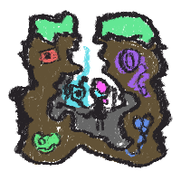
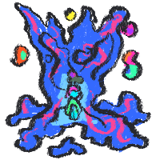
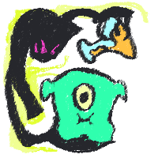
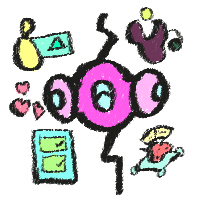
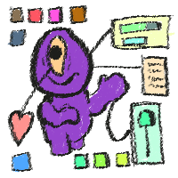

Subeta: A Muse in Disguise
A walk in the public park, the wind blowing at your naked ears, the gravel building up in those shoes that you should have thrown out long ago, and, from time to time, you see a squirrel quickly jumping over the tree branches that have been losing their leaves quite early this year. You take a deep breath, you exhale and just can't wait to go home - to cover in your favorite blanket. Only then you realize that this home that you are longing for is of cardboard and that path that you have been walking on is of glue, paper and the most beautiful coat of paint. Visiting Subeta is a stroll in a field of splendid dreams that will fade away if you lose your focus. Well, for me at least.
There is something comforting about this site that I fail to put into word. It's not a rush of nostalgia for me, but a severe craving for more. I feel immersed by the artwork and the people, up until a point where it seems to lose itself. Subeta is a very conventional pet site mechanically, as it mirrors many factors of the classical Neopets experience. No wonder, as it was one of the big fan projects of the former titan of the genre. With Neopets' clear lack of adult themes, mindful representation and variety in tone, Subeta strived to give this other target group a place to thrive. My questions during one year of constant playing experience revolved around the potential browser games had, have and will have on internet culture and this is where most of said opportunities are buried deep.
Daily Clicks per Day
The game itself is a simple yet surprisingly unintuitive one. Players are presented with a variety of daily tasks that I will denote as redeems. Click the link, get the thing, rinse and repeat. Every redeem is quite unique as they focus on collectibles such as fruit from an intergalactic tree, a deal from a wanted criminal, or random treasure that you can find in bathhouse. It's cute, it's fast, and it opens up even more questions. What would I use those items for? Why can I wear them? Should I sell them? I feel like the overall experience is providing me with countless decisions that I still struggle to make.
What would a game be without the fundamental urge to be an underpaid figure of capitalism. Quickly, one might find themselves in the predicament of not having enough of one of the 3 currencies. Here we also encounter the most simple way to earn considerable amounts of so-called sP to buy ... stuff! Visit an NPC, buy them stuff, give it to them, and get stuff back! Item pools vary and are, quite frankly, difficult to keep track of. Rewards can be arbitrary junk, cool junk or important junk, which I will elaborate on when we will be talking about the actual pets. The things you don't need can be salvaged into currencies, hoarded or sold in one of the numerous user shops that serve as a source of income (for most people). If you feel dandy, you can grind up some more tedious tasks or play a bunch of very fun mini-games. As you see, there is a whole lot to do on a daily basis, which can leave you occupied for multiple hours a day. Trade junk, buy junk, look at junk, use junk! Well, jolly, so much to do! Yet where. are. the pets ..?
Of Potions and Pets
I can't help but sigh when I think about the pets of Subeta. What certainly sparked my interest was the multitude of colors a pet could come in. Users can use potions or various site mechanics to give their plain (yet still gorgeous) pets a new look. Contrary to the whimsical Neopets colors like Fairy, Pastel, Chocolate, or a bunch of problematic shit, Subeta comes through with Nightmare, Bloodred and Reborn designs for the many species. Not only are most of the designs quite rich, but evolving steadily, with occasional redesigns and additions for newer species. What's more is the huge amount of experimental pets that have the most amazing and creative designs far off the conventionally cute and pretty aesthetic, which made me fall in love with what the site was trying to portray. This could be a place to get inspired and DO things. This could leave you thinking about how this poor rat creature ended up with three beautiful heads, or how this blob of limbs could be a complex concept of time and space. Now, what would I do if those designs sparked my interest? Why in the hell would I adopt something that looks like a cow or a porcupine? Well, friend, the answer is a pet page.
Four times a week, a spotlight takes place where some pet is posted in the news. The creature at hand will most likely be very different to a pet that has been adopted out of the box. Fun layouts, more graphics, a bunch of junk, stats, prose, you can find it all here. To me, this is what it is all about. Don't get me wrong, I am not talking about a contest for a spotlight, but the portrayal of creative processes. We are six chapters in and only now I manage to express what a pet site can be. Aside from a generic gameplay loop of fetch, pet sites could have a very intricate role in shaping the internet. They are frameworks of media that jumpstart self-assigned and reachable goals through multi-medial and creative execution. Every time I think about it, I end up in the world of zines. These are the spaces where lots of web art comes to life nowadays. Here's where individuals get into drawing, designing, writing and programming. On this basis I will try to argue the effort each pet site that I will present makes to provide a safer space for minorities, artists and intersectional identities. I will try to sketch a pet site as a muse for people who want to get inspired or give their ideas home and representation.
A Junkyard for the Wicked
Now that we've dug a bit deeper, found this little piece of gold, there is an obvious concern. Me boasting about how beautiful and accessible such a pet system is, does not change the fact that Subeta itself is struggling to balance those creative, autonomous mechanics well. Frankly, the focus has shifted towards systems more lucrative for obvious reasons to keep the site alive. A key element of the site has been the customization of user avatars with a large amount of junk where people are able to create their very own custom junk, which of course is a profitable system at that. A far more complex endeavor is the combat system, which has sparked controversy recently. I won't be going into detail as it has nothing to do with my point, yet it opens up the question of how all this junk keeps the user base engaged and how it ties in to the world of virtual pet sites.
I feel like you might be sick of me calling every item junk at this point. Honestly, I am quite torn on the definition of items. In some games, there even is a dedicated category that introduces items as trash; nonetheless, I feel like pet sites have a very special relation to that concept. Every Subeta item has at least one purpose and can be classified by type and rarity. The rarity denotes the accessibility of an item which opens up a bigger discussion that I am not (yet) willing to discuss. Every item has at least one purpose where users will have to decide how they would like to use this item. In an MMORPG context. It is analogues to the concept of soulbound items that can either be equipped and used or traded to other players. Will I consume my item and lose its value on the market? While tempting in design, the execution on Subeta leaves users clueless when one item can be consumed in multiple ways. Items can be read, eaten, played with, worn, used and or put into a pet's treasure chest. To put this into perspective, I will present the way I try to classify items personally. Arbitrary junk are items to me that I would not feel any attachment to. Those could be items with no unique interaction, progress or mechanic tight to it (i.e., furniture, toys or miscellaneous outliers). Cool junk includes the things that I love and want to include in my gameplay. Items that enable my creativity and make me build narratives, characters and concepts. This includes items that are just fun to look at or fascinate me. Important junk are items that I would like to just delete from the game as they are tied to game progression for various achievements. Unfortunately, this is where most cool junk intersects for me, and it is at this point where potentially bad design habits may arise. We no longer think about how we could use our new item, but we start to consider if we are going for completing artificial achievements or not. If we decide to ditch the progression, the beloved fight against the Fear of Missing Out (FoMO) begins and we are confronted with new questions.
Should I read this book to my pet, or should I showcase it on the profile? Should my pet eat this cake, or could my avatar use it in any fun way? The answer is quite simply choice paralysis with newcomers ending up overwhelmed from the abundance of options since the site has been online for over a decade now with items being added constantly. That this concept is monetisable goes without saying, which leads me back to the very first metaphor. The value of pretty items is two-fold. Despite the obvious appeal for the audience to buy, more niche and unique themes lead to further inspirations for a pet. Users might identify with item sets regarding a certain kind of bug, a specific material, an obscure hobby or just a bunch of subtle references to other media. Every new item sparks at least someone's motivation to buy a slot for a pet, fill it up with junk and pamper it to make your own concept come to life. Contrary to that, a very specific and abstract design will deter a majority of users who will struggle to find an item worth the cost. We start to question if we are buying for the sake of having the item or genuinely enjoying it. When I saw a collection of books about vegetables doing crime, I immediately was thinking about one of my favorite books from my childhood, which made me write up a site about a cyber-criminal onion distributing media illegally. This shit is powerful if done right, and it is this slippery slope that Subeta will have to take when arguing the creative freedom they provide to the user. Are we talking inspiration or aspiration? Should users buy everything there is or everything they love? How will we help the user decide?
This has been quite the ride for me. I am in love with what Subeta is and what it might have been. Times are tough for old media, and I am more than amazed by its implementation and artistic possibilities, yet I can't help but think about its flaws. Confusing and incohesive mechanics, choice paralysis, an abundance of junk items most people might not even care about and a multitude of systems that will create ridges within a use base that is quite small at that. All that encompasses a core concept that influenced and keeps sparking ideas in the hearts of creative minds that just want to find a place to throw in their art, stories and opinions in a coat of stylized graphics accessible to a user base of intersectional identities. Obviously, we did not touch on everything there is to the site. I will throw in some more questions at the end of the post to spark some more ideas. Anyways, here are my personal takeaways, or a tl;dr if you'd like.
Virtual pet sites of the nature of Subeta are websites that can inspire people to be creative while providing them hosting possibilities in the scope of the site's aesthetic. They try to create immersion through interaction with your pet through items and will provide further stimuli for you to improve on it. Despite the availability of an atrocious amount of items, users may be faced with choice paralysis as the creative process converges towards "getting the thing" or going towards pre-defined achievements rather than investing in one's own goals. Where do we draw the line between giving users artistic freedom while making our coin? All that is part of this weird little journey, and I hope to find some more answers as I look through other prevalent pet sites out there.
The site in question: Subeta